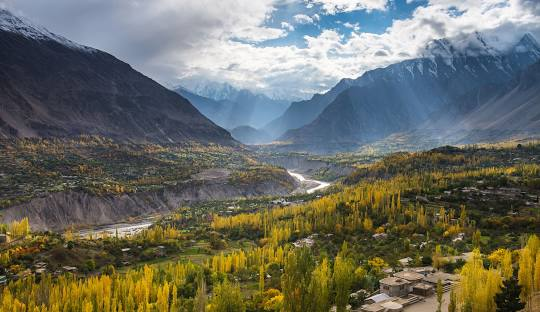
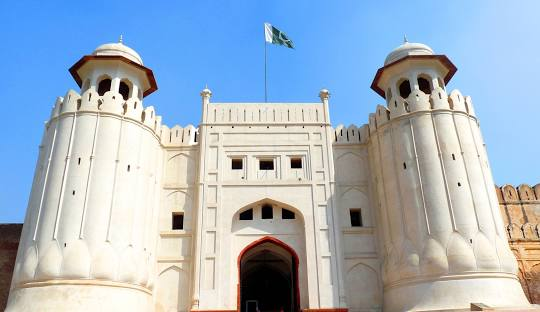
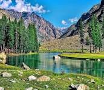
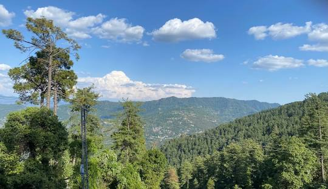
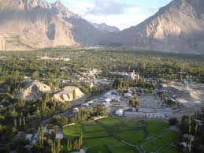
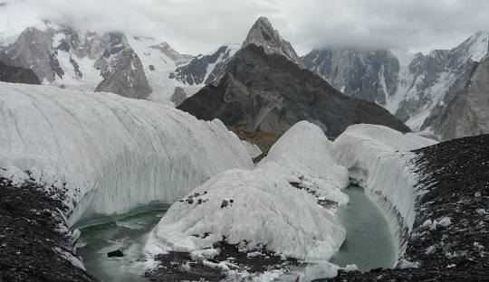
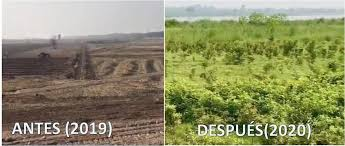
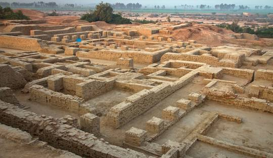

Descripción del País:
Pakistán es un país del sur de Asia que limita con India, Afganistán, Irán y China. Su capital es Islamabad, y la ciudad más grande es Karachi. Con una población diversa, es el quinto país más poblado del mundo. Pakistán tiene una rica historia, con herencias de civilizaciones antiguas como la del valle del Indo. Es una república islámica con una cultura marcada por tradiciones religiosas y una diversidad étnica significativa. La economía es mixta, con sectores agrícolas e industriales clave. A pesar de desafíos políticos y económicos, es una nación con una gran importancia geopolítica.
5 LUGARES PARA IR DE VACACIONES EN U.S.A.
1. Valle de Hunza
Ubicado en la región de Gilgit-Baltistán, el Valle de Hunza es famoso por sus paisajes montañosos, glaciares y su gente amable. Las vistas de Rakaposhi, Ultar Sar y Ladyfinger Peak son espectaculares. Karimabad, la principal ciudad del valle, tiene el Fuerte Baltit, que ofrece una vista panorámica impresionante.
2. Lahore
La capital cultural de Pakistán es conocida por su rica historia y arquitectura mogol. El Fuerte de Lahore, la Mezquita Badshahi y los Jardines de Shalimar son solo algunos de los muchos lugares históricos que puedes explorar. Además, la comida callejera y la vida nocturna vibrante hacen de Lahore un destino imperdible.
3. Valle de Swat
Conocido como la "Suiza de Oriente", el Valle de Swat es famoso por sus ríos, lagos cristalinos y montañas cubiertas de nieve. Lugares como Malam Jabba, una estación de esquí, y Mingora, la ciudad principal, ofrecen diversas actividades al aire libre y oportunidades para explorar la naturaleza.
4. Islamabad y Murree
Islamabad, la capital de Pakistán, es una ciudad moderna con arquitectura impresionante, como la Mezquita Faisal. A poca distancia está Murree, un popular destino de montaña conocido por su clima fresco y su belleza escénica. Es ideal para una escapada relajante con vistas a las montañas del Himalaya.
5. Valle de Skardu
También en la región de Gilgit-Baltistán, el Valle de Skardu es la puerta de entrada al Karakoram, hogar de algunas de las montañas más altas del mundo, incluyendo el K2. Skardu es famoso por su lago Shangrila, el Fuerte Skardu y la cordillera de Deosai. Es un paraíso para los excursionistas y aventureros.
DATOS CURIOSOS
1. El Glaciar de Baltoro:
Pakistán alberga uno de los glaciares más largos fuera de las regiones polares, el glaciar de Baltoro, en la cordillera del Karakórum. Este glaciar tiene unos 63 kilómetros de largo y es un destino popular para montañistas y aventureros, ya que da acceso a K2, la segunda montaña más alta del mundo.
2. Récord de árboles plantados:
Con más de 17,000 islas, Indonesia es el archipiélago más grande del mundo. Solo alrededor de 6,000 de estas islas están habitadas, y Java es la más densamente poblada.
3. Mohenjo-Daro:
Indonesia es uno de los países con mayor diversidad lingüística en el mundo, con más de 700 lenguas diferentes. Aunque el idioma oficial es el indonesio, muchas personas hablan varios idiomas, incluyendo lenguas regionales y dialectos.
QUIZ
¡PRUEBA TUS CONOCIMIENTOS DE PAKISTAN!
Gracias por participar.
Tu puntaje fue: